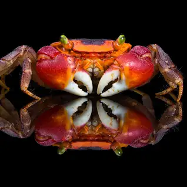

Crabs are one of the world’s most known animals and the most well-known crustacean along with lobsters. They possess a hard exoskeleton, eight legs, and two arms with pincers on each. They also live on essentially every one of the world’s oceans including the Arctic and the Antarctic Regions and can live on land, freshwater, or seawater depending on the species. Crabs typically have six walking legs and two swimming legs along with the obvious characteristic of pincers on each of the two arms to grab things, whether it be prey, objects, or to defend themselves.
Crabs are also a delicacy everywhere in the world. Many cultures adopt a different cuisine style when it comes to crabs being one of the ingredients. With a meaty, moist, and flaky flavor, it is also combined with certain dishes and foods to maximize its potential for being an excellent choice in eating seafood. One example is around Southeast Asia, spice is generally added to dishes such as masala crab and chili crab to improve the experience when trying it out.